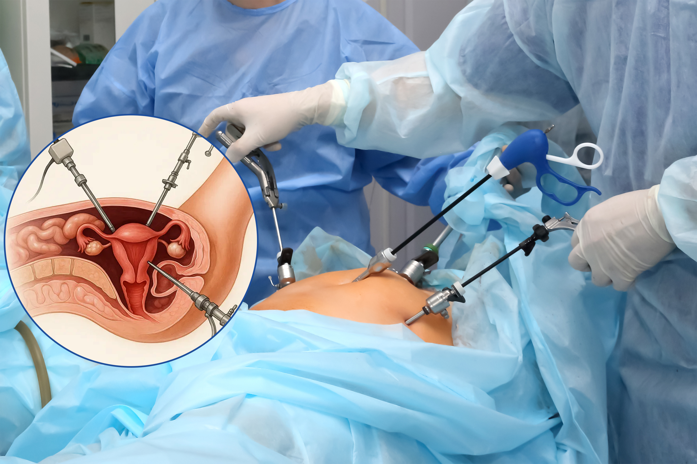
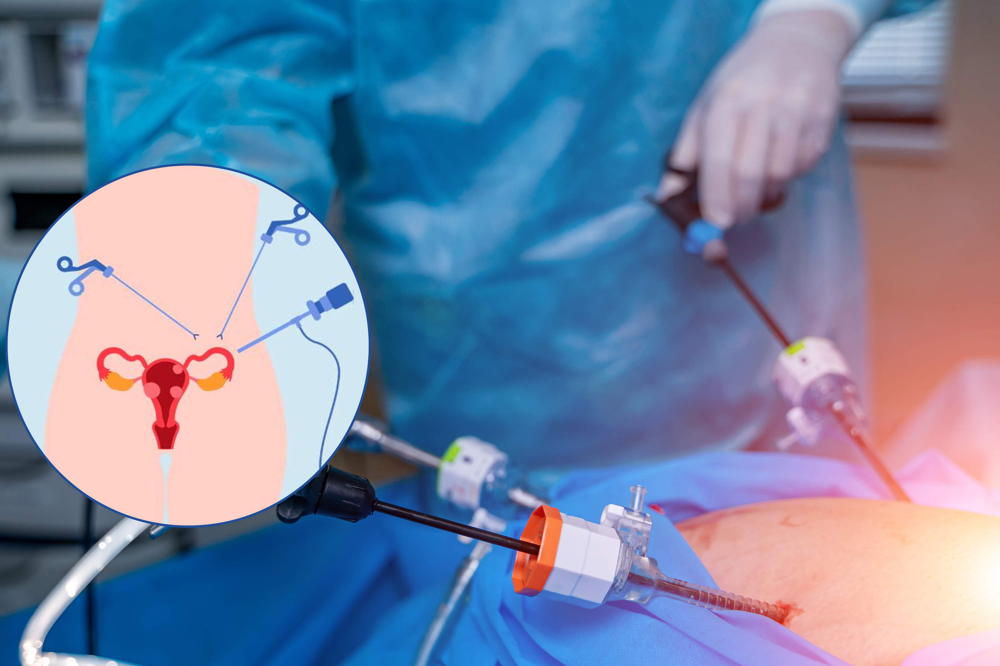

Gynaecology Laparoscopic Procedures
Laparoscopic Hysterectomy (TLH)
Advanced minimally invasive surgery for safe removal of the uterus with quicker recovery. This keyhole technique reduces pain, bleeding, and hospital stay compared to open surgery. It allows faster return to daily activities with minimal scarring. Performed by skilled surgeons using advanced instruments, ensuring precision and safety.

Laparoscopic Myomectomy (Fibroid Removal)
Precise laparoscopic removal of uterine fibroids while preserving the uterus. This procedure is ideal for women with heavy bleeding, pain, or fertility issues caused by fibroids. It ensures minimal blood loss and faster healing. Women can resume normal routines sooner with excellent cosmetic results.

Laparoscopic Ovarian Cystectomy
Safe and minimally invasive removal of ovarian cysts while protecting ovarian function. This technique allows precise removal of cysts without damaging healthy ovarian tissue. It is effective for treating dermoid cysts, chocolate cysts, and simple cysts. Recovery is quick, with reduced discomfort and very small incisions.

Laparoscopic Endometriosis Surgery
Minimally invasive surgery to remove endometriotic lesions and relieve chronic pelvic pain. This procedure helps improve fertility, reduce inflammation, and restore quality of life. Advanced laparoscopy allows accurate identification and removal of affected tissue. Patients experience faster relief with minimal postoperative pain.

Laparoscopic Ectopic Pregnancy Surgery
Emergency laparoscopic procedure to treat ectopic pregnancy safely and quickly. This minimally invasive method helps stop internal bleeding and protect reproductive health. It allows faster recovery and less trauma than open surgery. Our specialists ensure timely diagnosis and immediate, safe intervention.

Laparoscopic Tubal Recanalization
Microsurgical minimally invasive procedure to restore tubal patency when indicated. This technique helps women regain natural fertility after tubal blockage or previous sterilization. High-precision laparoscopy ensures delicate handling of reproductive structures. Patients benefit from quicker recovery and excellent success rates.